De mooiste kastelen in Namen
Sommige liggen hoog op de rotsen boven de Maas of de Lesse, andere verscholen in de bossen of in stille dorpen in de Ardennen en de Condroz. Klik door naar de afzonderlijke kasteelpagina's voor foto's, achtergrondinformatie en praktische tips voor je bezoek.


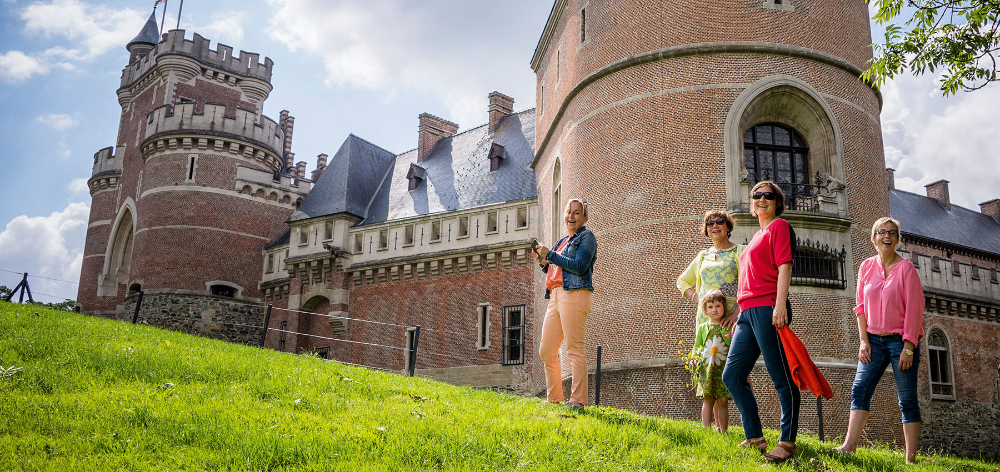
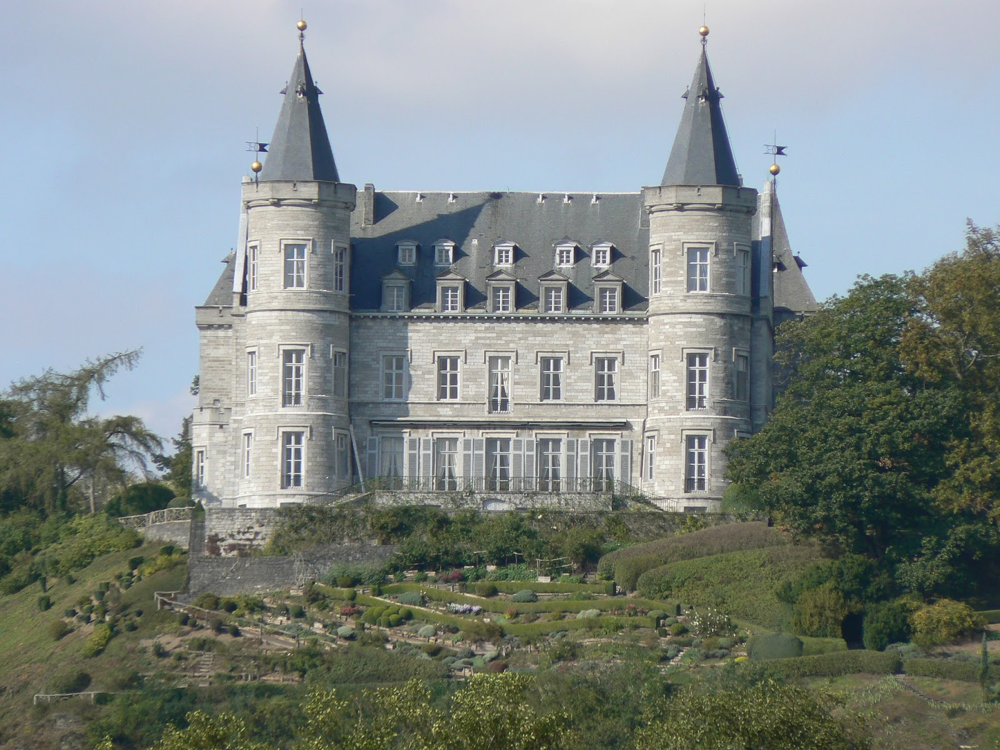

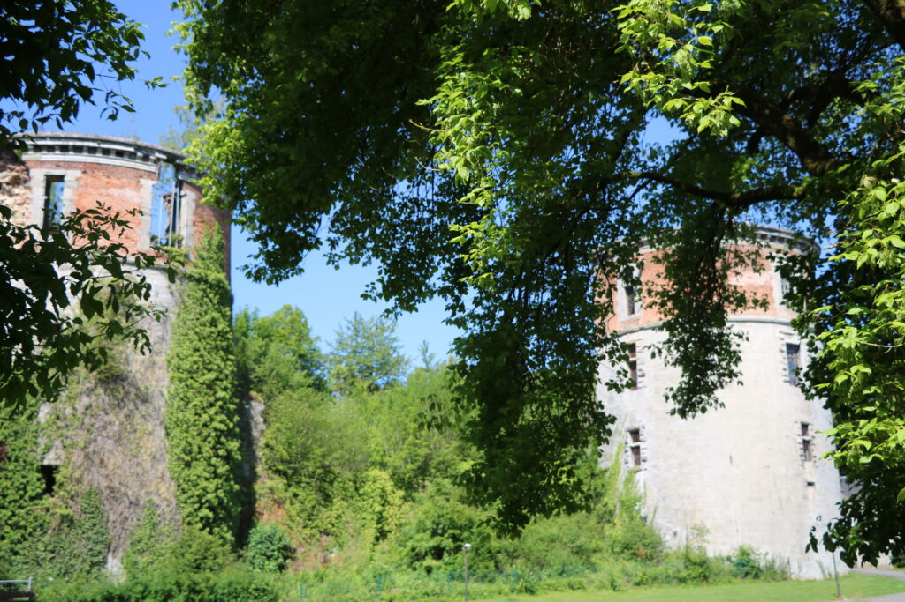
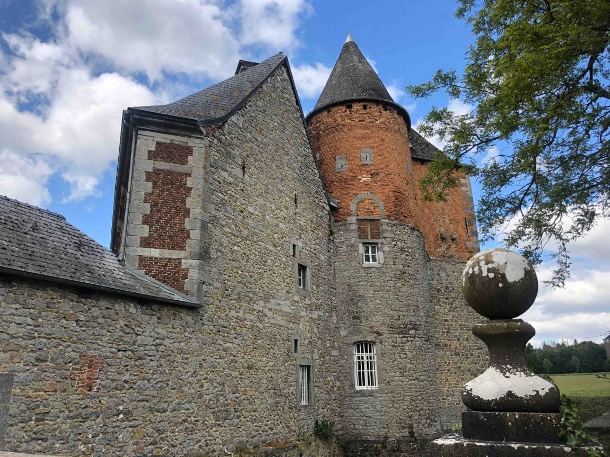

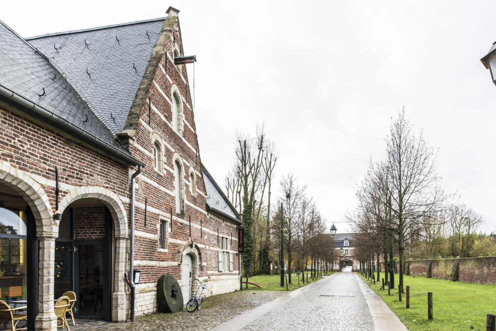
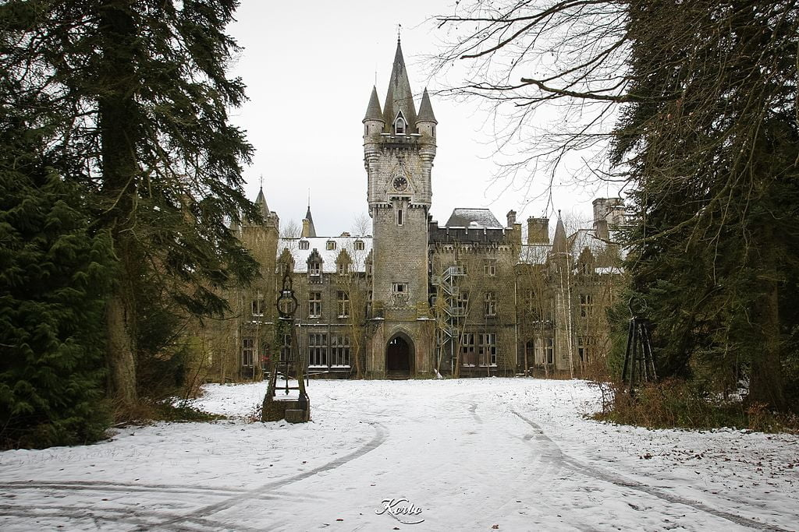
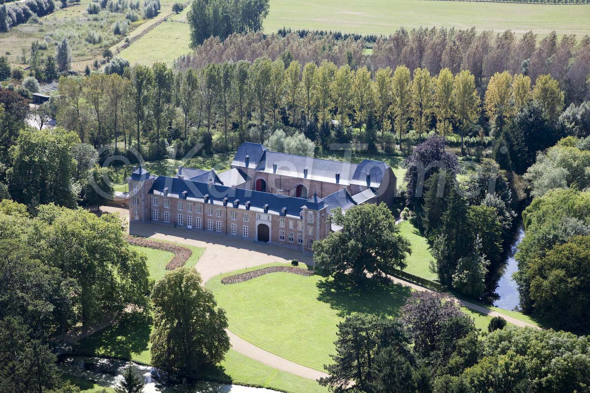
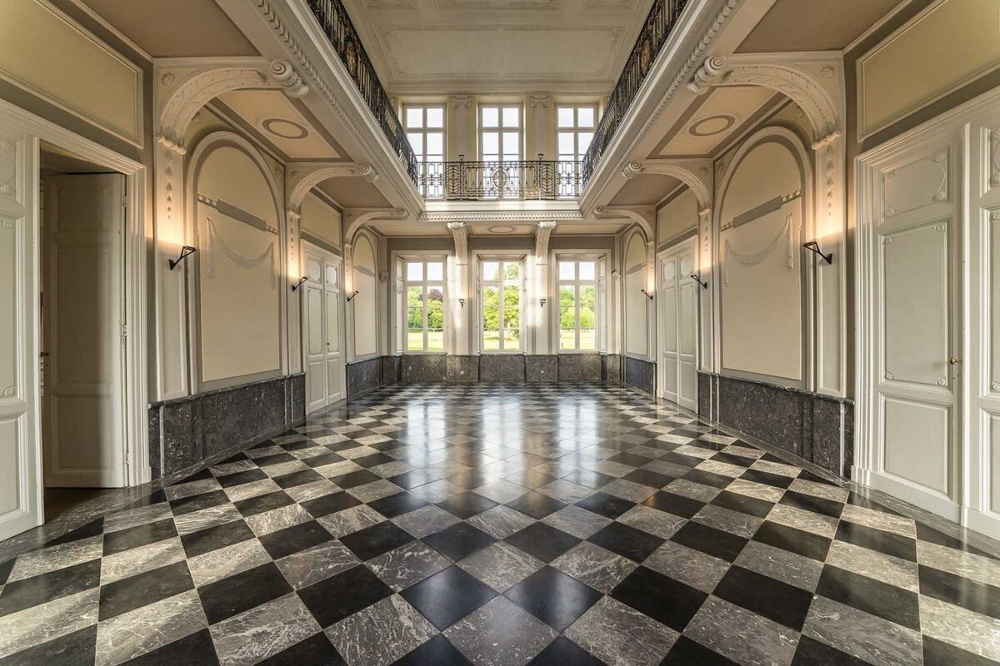
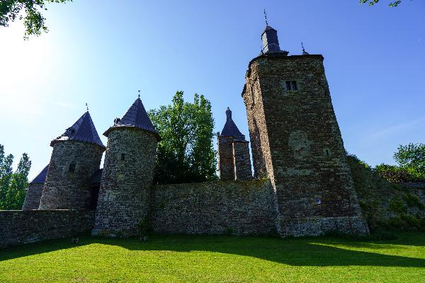
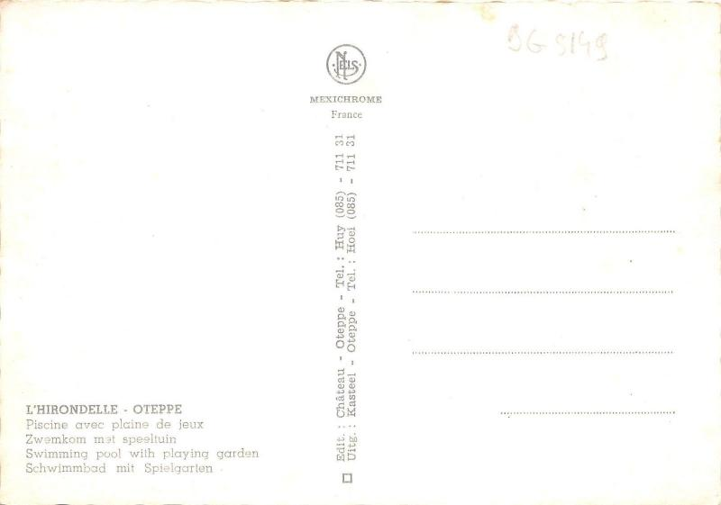
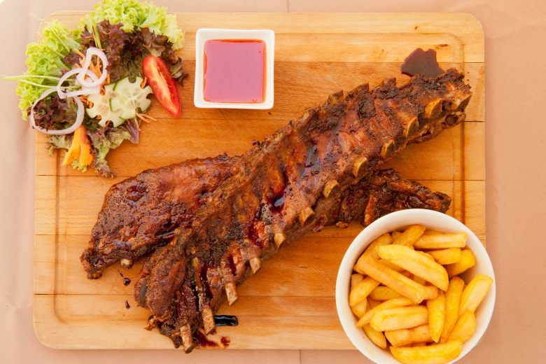